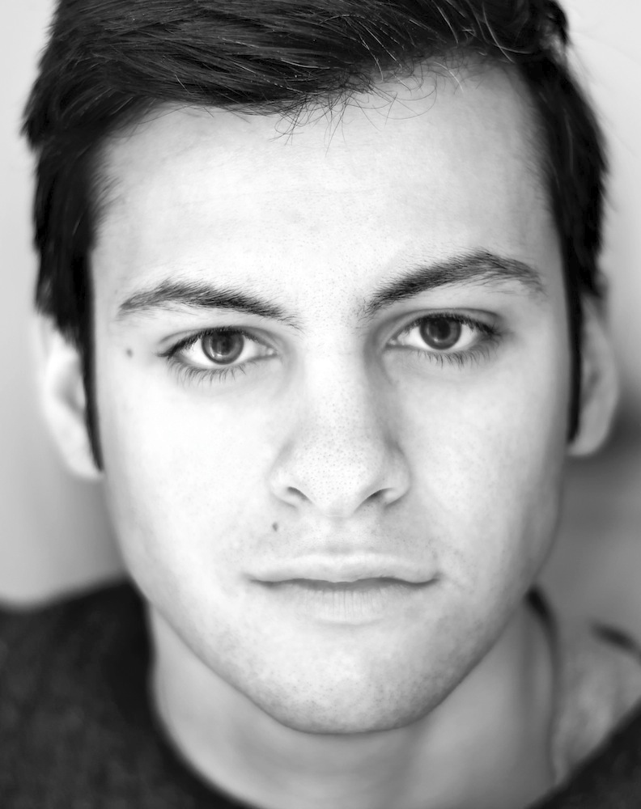
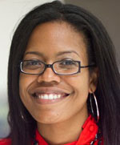
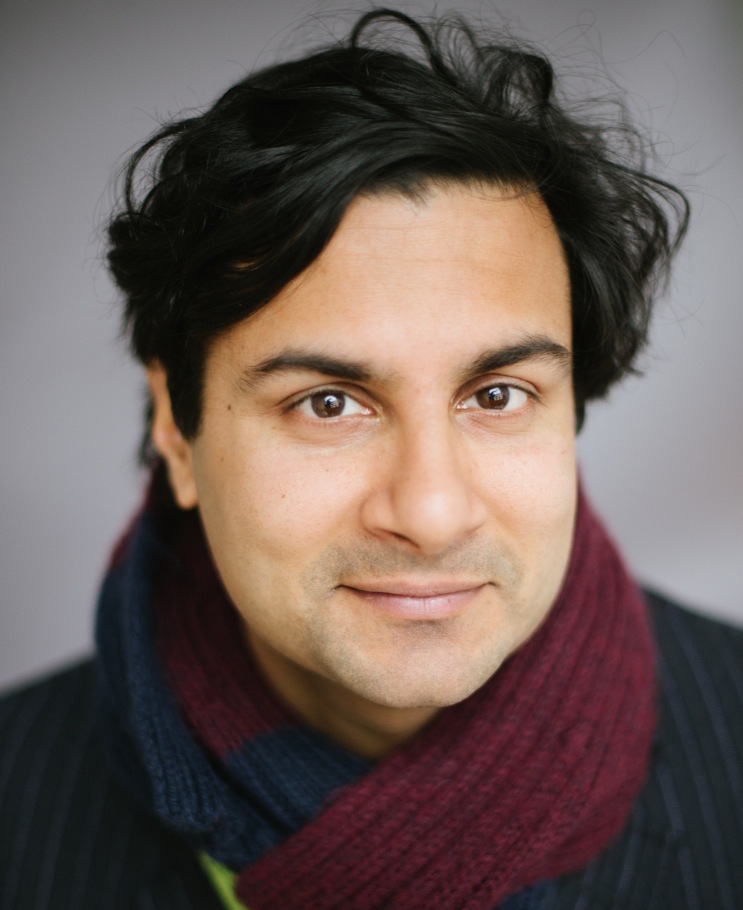
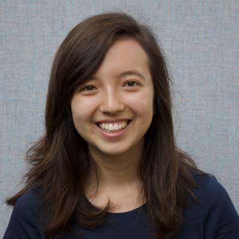
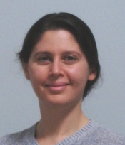
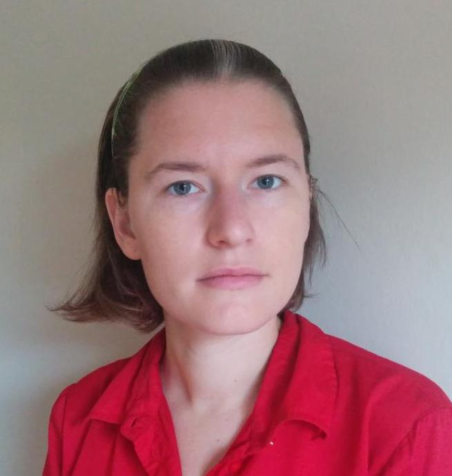

| Date/Location |
Speaker |
|
Fri Nov 4, 12:30 pm
SCI 278
|
Jordan Suchow, UC Berkeley
Experiment design, algorithm design, and automation in the behavioral and social sciences
abstract and bio
Abstract
As experimentation in the behavioral and social sciences moves from brick-and-mortar
laboratories to the web, new opportunities arise in the design of experiments.
By taking advantage of the new medium, experimenters can write complex computationally
mediated adaptive procedures for gathering data: algorithms.
This talk explores the consequences of adopting an algorithmic approach to experiment design.
I'll review several experiment designs drawn from the fields of medicine,
cognitive psychology, and psychophysics, describing their interpretation as algorithms.
I'll then discuss Dallinger, a software platform for efficient execution of these algorithms with people.
Finally, I'll sketch out a vision for next-generation experimentation in the behavioral and social sciences:
high-throughput automation via culture-on-a-chip computing.
Bio
Jordan Suchow is a cognitive scientist studying vision, learning, memory, and technology.
Suchow is a postdoctoral fellow at UC Berkeley, affiliated with the Institute of Cognitive
and Brain Sciences and the Berkeley Artificial Intelligence Research Lab.
This year, he is a visiting scientist at Wellesley.
|

|
Tue Nov 8, 12:30 pm
SCI 278
|
Andrea Parker, Northeastern University
Community Wellness Informatics: Creating Technology for Health Equity
abstract and bio
Abstract
In the U.S., there are serious and persistent disparities in health outcomes.
Socioeconomic status is predictive of mortality and disease, with low-SES
households dispropotionately experiencing the poorest health outcomes.
This inequality is due in large part to social determinants of health --
social, physical, and economic conditions that make it more challenging to achieve
wellness in low-SES communities.
Disruptive innovations are sorely needed to reduce health disparities.
Technology, with its growing ubiquity and ability to provide engaging,
informative, and empowering experiences for people,
presents exciting opportunities for health equity research.
This talk will present a set of case studies demonstrating how the
Wellness Technology Lab is pursuing technology-driven social change
through health promotion.
These case studies explore how social computing and mobile technology
can help low-SES communities both cope with barriers to wellness and
address these barriers directly.
Bio
Andrea Grimes Parker is an Assistant Professor of Northeastern University,
with joint appointments in the College of Computer and Information Science
and the Bouve College of Health Sciences.
She holds a Ph.D. in Human-Centered Computing from Georgia Tech
and a B.S. in Computer Science from Northeastern University.
Dr. Parker is the founder and director of the Wellness Technology Lab
at Northeastern -- an interdisciplinary research group which spans the domains
of human-computer interaction (HCI), personal health informatics,
and public health to examine how social and ubiquitous computing
systems can help reduce ethnic, racial and socioeconomic
health disparities.
|

|
Fri Nov 11, 12:30 pm
SCI 396
|
Abhi Shelat, Northeastern University
Secure Stable Matchings
abstract and bio
Abstract
When a group of individuals and organizations wish to compute a stable matching --
for example, when medical students are matched to medical residency programs --
they often outsource the computation to a trusted arbiter in order to preserve the
privacy of participants' preferences.
Secure multi-party computation offers the possibility of private matching processes
that do not rely on any common trusted third party.
However, stable matching algorithms have previously been considered infeasible for
execution in a secure multi-party context on non-trivial inputs because they are
computationally intensive and involve complex data-dependent memory access patterns.
In this talk, I will explain how we can use 2-party computation to securely compute
stable matchings on instances the size of the 2016 NRMP medical residency matching
in less than 1 day.
Prior work on this problem was stuck on toy instances involving a few hundred participants.
The insight is to exploit an algorithmic property of matchings and design a new secure
computation data structure.
Bio
Abhi Shelat works on cryptography and applied security. He completed his B.A. at Harvard,
spent two years at a startup in the Bay Area, and then earned a Ph.D. at MIT in 2005.
He worked at the IBM Zurich Research Lab as a Research Staff Member until 2007 when he
joined the University of Virginia.
Abhi is also co-founder of a software company, Arqspin.
He moved to Northeastern University in Fall 2016 where he is an associate professor of
computer science.
|

|
Mon Nov 14, 12:30 pm
SCI 396
|
Mor Naaman, Cornell Tech
Awareness, Coordination and Trust in the Peer Economy
abstract and bio
Abstract
Communities in urban environments, and underserved communities in particular,
could benefit from the positive economic and social outcomes offered via
collaborative consumption services.
Technology can support collaborative consumption (sometimes called "peer economy")
by providing important enablers such as awareness, coordination
and trust between individuals.
I will briefly describe a number of projects we are
currently working on to develop technology to provide,
and techniques to understand these enablers.
I will spend most of my time on the topic of trust, describing a mixed-methods
study in which we examine how hosts describe themselves on their Airbnb profile pages.
The results show the imapct of the host's self disclosure on their trustworthiness,
and have important design implications for collaborative consumption platforms.
Bio
Mor Naaman is an associate professor of Information Science at the Jacobs
Technion-Cornell Institute at Cornell Tech., where he is the founder
of the Connective Media hub, and leads a research group
focused on social technologies.
|
|
Fri Nov 18, 12:30 pm
SCI 396
|
Su Lin Blodgett, UMass Amherst
Dialectal variation in social media: A case study of African-American English
abstract and bio
Abstract
The growth of social media presents rich opportunities for social analysis,
ranging from politics and market trends to public health.
Among the challenges that social media text presents to natural language processing,
however, is the abundance of dialectal language.
This talk explores our investigation of the use of one such dialect,
African-American English (AAE), on Twitter.
I will talk about a model we developed to identify AAE-like language from tweets and
the linguistic challenges associated with creating the first broad corpus of such tweets.
I will also talk about experiments that show that current NLP tools perform poorly
on such text compared to text associated with white speakers,
and the consequences of such bias for a variety of NLP tasks.
Finally, I will talk about one approach to eliminating this bias.
Bio
Su Lin Blodgett is a PhD student at the University of Massachusetts Amherst.
She is advised by Dr. Brendan O’Connor in the Statistical Social Language Analysis Lab,
and her research explores the use of statistical text analysis to answer social
science questions, with a current focus on social media text.
Before UMass, she earned a B.A. in mathematics from Wellesley College in 2015.
|

|
Wed Nov 30, 12:30 pm
SCI E111 |
Karen Livescu, Toyota Technological Institute at Chicago
Continuous Vector Representations of (Spoken and Written) Words
abstract and bio
Abstract
This talk is an overview of some of the research at TTI-Chicago in the area of speech and language processing.
I will focus mainly on the topic of word embeddings, a way of representing a word using a vector of
continuous-valued numbers.
We can think of each of the vector dimensions as representing some aspect of the word,
and we can try to assign vectors to words so that similar words have similar vectors.
Such word embeddings have been useful in a variety of natural language processing applications.
I will talk about both semantic word embeddings
(where the vector is intended to represent the meaning of the word),
and acoustic word embeddings (where the vector represents the way the word sounds).
The talk addresses a number of questions related to this line of work:
How do we automatically learn word embeddings from data,
such that they are useful for applications that we care about?
What do these vectors look like?
And how can we combine word embeddings to form, say, phrase or sentence vectors?
In addition, I will give a brief overview of TTI-Chicago and our PhD program,
as well as a few remarks about my experience as a female researcher.
Bio
Karen Livescu is an Assistant Professor at TTI-Chicago.
She completed her PhD and post-doc in electrical engineering and computer science at
MIT and her AB in Physics at Princeton University.
Karen's main research interests are in speech and language processing,
with a slant toward combining machine learning with linguistic structure.
Her recent work has included multi-view learning of speech and text representations,
segmental neural models, and automatic sign language recognition.
She is a member of the IEEE Spoken Language Technical Committee,
an associate editor for IEEE Transactions on Audio, Speech, and Language Processing,
and a technical co-chair of ASRU 2015 and 2017.
She has organized/co-organized a number of recent workshops,
including the ISCA SIGML workshops on Machine Learning in Speech and Language Processing
and the Midwest Speech and Language Days.
|

|
Fri Dec 9, 12:30 pm
|
Emma Tosch, UMass Amherst
|

|